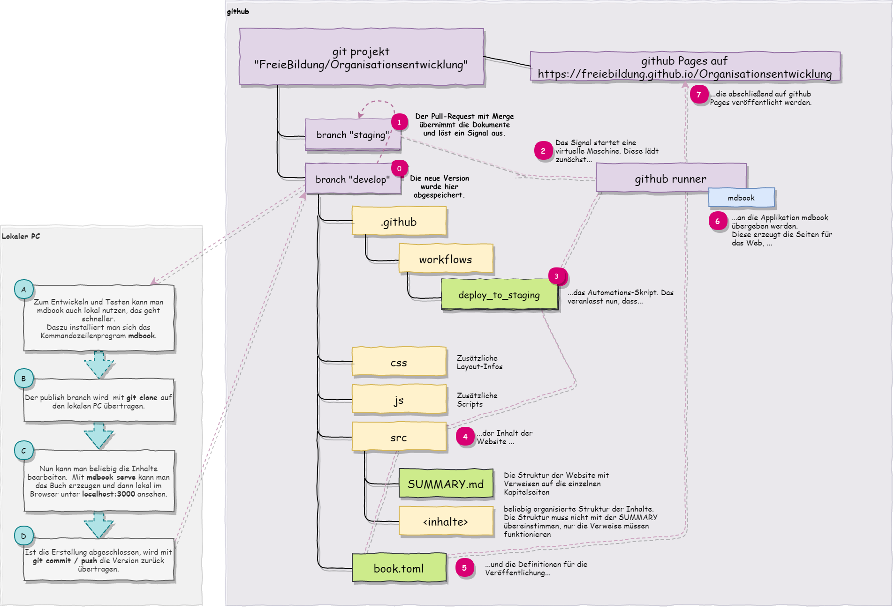

Prozesshandbuch Servicenetzwerk
Dieses ebook stellt die vom Servicenetzwerk unterstützten Abläufe vor.

Momentan liegt der Fokus auf den Buchhaltungsprozessen, die für die teilnehmenden Schulen essenziell sind.
Weitere Prozesse in Planung:
Servicenetzwerk
- Aufnahme einer weiteren Schule
- Einführung neuer Leistungsangebote
- Training
- Informationskonzept
IT
- Automatisierung von Abläufen
- Sicherheitsprozesse
Schulen
- Kommunikationsprozesse
- Regulatorische Prozesse
Finanzverwaltung
Debitorenbuchhaltung
Elternbeitragsverarbeitung
Stammdaten-Abrechnungs-Management
Prozessablauf
Lastschriftenauslösung
Prozessablauf
Lastschriftverbuchung
Prozessablauf
Abrechnung von Eingliederungshilfen
Beteiligte
- Integrationshelferin
- Schulleitung
- Verwaltung
- Buchhaltung
Der ideale Prozess
Ablauf
- Zu jedem Monatsanfang stellt die Verwaltung die Abrechnungstabelle für jede Integrationshelferin bereit.
- Zum Abrechnungsstichtag am Monatsende füllt jede Integrationshelferin die Abrechnungstabelle mit den geleisteten Arbeitsstunden aus. Wenn alle Einträge erfolgt sind, muss die Integrationshelferin die Tabelle zur Prüfung übergeben.
- Die Schulleitung erhält für jede zur Prüfung übergegebene Tabelle eine Benachrichtigung.
- Die Schulleitung stellt die Korrektheit und Vollständigkeit der Abrechnung fest.
- Sofern eine Abrechnung Fehler aufweist, geht sie zurück an die betroffene Integrationshelferin zur Klärung bzw. Korrektur.
- Die Schulleitung gibt die Abrechnung zur Buchung bis zum Buchungsstichtag frei.
- Die Buchhaltung erstellt für jede zur Buchung freigegebene Abrechnung eine Rechnung an den Kostenträger und versendet diese spätestens am Versandstichtag.
- Die Buchhaltung übermittelt die Ausgangsrechnung an das DATEV-Rechnungswesen. Damit endet der Abrechnungsprozess der Eingliederungshilfe.
Regelungen
- Abrechnungsstichtag: der 1. des Folgemonats, ersatzweise der vorangehende letzte Arbeitstag.
- Buchungsstichtag: der 10. des Folgemonats, ersatzweise der vorangehende letzte Arbeitstag.
- Versandstichtag: der 15. des Folgemonats, ersatzweise der vorangehende letzte Arbeitstag.
- Das Servicenetzwerk erstellt Kennzahlen zur Fristeneinhaltung und zur Prozesshistorie.
- Die Buchhaltungsregeln für die Ausgangsrechnungsbuchung.
Voraussetzungen
- Kostenträger pro Integrationshelfer bekannt
- Integrationshelfer haben Zugriff auf Erfassungssoftware (ELO oder anderes Formular)
- Die Prozessteilnehmer agieren in einer Rolle und haben jeweils Vertreter, die die Augaben fristgerecht übernehmen können.
Prozessfehler
- Stichtage überschritten: Der Teilnehmer und die Verwaltung erhalten eine Benachrichtigung mit der Bitte um dringende Erledigung. Bei Überschreitung der Buchungsstichtage Abrechnung im Folgemonat.
- Fehlzustellungen an Prozessteilnehmer: Nach Rücklauf und Datenkorrektur erneutes Ausführen der fehlerhaften Schritte.
- Fehlerhaft gestellte Ausgangsrechnung: buchhalterische Auflösung / Korrektur ohne erneuten Prozessdurchlauf.
- Fehlerhaft durchgeführte DATEV-Buchung: buchhalterische Auflösung / Korrektur ohne erneuten Prozessdurchlauf.
Prozesskennzahlen
- Anzahl der Abrechnungen
- Prozessdurchlaufzeit
- Prozesskosten
- Einhaltungsquote des Abrechnungsstichtags
- Einhaltungsquote des Buchungsstichtags
- Einhaltungsquote des Versandstichtags
- Quote fehlerhafter Rechnungsstellungen
- Quote Fehlbuchungen
Prozessartefakte
- Abrechnungstabelle
- Freigabe der Schulleitung
- Rechnungsbeleg für den Kostenträger
- DATEV-Buchungssatz
Prozessablauf
Mahnwesen
Prozessablauf
Kreditorenbuchhaltung
Belegeingang
Prozessablauf

Belegverbuchung
Prozessablauf
Zahlungsverkehr
Prozessablauf
Lohnbuchhaltung
Lohnzahlung
Prozessablauf
Lohnverbuchung
Prozessablauf
Lohnauswertung
Prozessablauf
Information und Kommunikation
Informationsmanagement
Publikation
Ausgabeziel
Website
Das Handbuch zur Organisationsentwicklung wird weitgehend automatisch publiziert. Dazu dient die versionierte Ablage aller Inhalte im github Projekt-Repository. Zum Schreiben und schnellen Testen kann die Erzeugung auch lokal auf dem PC durchgeführt werden.
Die Erzeugung von PDFs ist möglich, allerdings momentan noch eingeschränkt.
- Keine Titelseite
- Keine Prozessdiagramme (ein Workaround findet sich auf der Seite zur Eingliederungshilfe)
- Nicht automatisierbar, das Modul führt zu Fehlern im automatischen Deployment.
Prozessbeteiligte
- Autorin
- Redakteurin
Der ideale Prozess
Ablauf
-
Autorinnen schreiben in Markdown und speichern im github-Repository Organisationsentwicklung in den Branch develop. Sie können lokal ihre Änderungen testen, wenn ihr System dafür eingerichtet ist.
-
Eine Redakteurin kann durch einen Pull-Request die letzten Änderungen von develop nach staging übernehmen (dies erfolgt über diese Github-Seite. Dieser Pull-Request löst eine Publikation auf die Pages des Repositories aus, so dass nun alle erstellten Änderungen auch auf einer Testseite im Internet zu sehen sind. Die Seite steht im Anschluss unter https://freiebildung.github.io/Organisationsentwicklung/ zur Verfügung. Dieser Schritt ist optional und wird vor allem bei größeren Änderungen ohne lokale Vorprüfung empfohlen
-
Die verantwortliche Redakteurin kann die Seite auf die offizielle Website übernehmen. Dies erfolgt zurzeit über den manuellen Start des Produktionsworkflows "Run Workflow" auf dieser Seite. Dabei kann der Workflow vom Branch "develop" (ungeprüft) oder "staging" (geprüft) die Daten lesen. Das System publiziert nun automatisch nach https://www.servicenetzwerk-freie-bildung.de.
Regelungen
- Organisatorische Festlegung, wer wann vor der Publikation prüft.
Voraussetzungen
- Prozessteilnehmerinnen haben Zugriff auf das github-Projekt und sind in die Abläufe eingewiesen.
Prozessfehler
Prozessfehler führen zu einem gescheiterten Workflow oder einem unerwünschten Ergebnis auf der Website. Die Prozessfehler können auf der Github-Seite zu Actions gesehen und untersucht werden. Der häufigste Fehler liegt in ungültigen Verweisen ausgehend von der SUMMARY.md Datei.
Prozesskennzahlen
- Anzahl der Prüfungen
- Anzahl der Produktionsdeployments
- Prozessdurchlaufzeit
- Prozesskosten
- Fehlerquote der Produktionsdeployments
Prozessartefakte
- Versionierte Dokumentation
- Publizierte Staging-Website
- Publizierte Produktions-Website
Prozessablauf
Übersicht über den Publikationsprozess

Technischer Ablauf im Detail
Darstellung vereinfacht für die Erstellung der Staging-Umgebung.

Erzeugung des PDFs
Für die PDF-Erzeugung muss book.toml modifiziert werden. Dieser Abschnitt wird angehängt:
[output.pdf]
optional=true
display-header-footer = true
paperWidth = 8.2
paperHeight = 11.6
header-template = "<h3 style='font-size:12px; margin-left: 48px' class='title'></h3>"
footer-template = "<p style='font-size:10px; margin-left: 48%'><span class='pageNumber'></span> / <span class='totalPages'></span></p>"
Der Aufruf kann dann von der Linux-Kommandozeile erfolgen:
docker run --rm -v /path/to/book:/book -v ~/.cargo/bin:/mdbook hollowman6/mdbook-pdf
Das PDF liegt nach erfolgreicher Erzeugung in book/pdf/output.pdf.
Prozessunterstützung
Darstellung der Prozessdiagramme
Da die eingestellten Prozessdiagramme teilweise sehr umfangreich sind, benötigen wir eine Zoom-Funktion. Die einfachste Weise ist, den Camunda Modeler in einer Read-Only-ansicht einzubinden. Im Diagramm kann man dann mit Strg + Mausrad zoomen oder mit Shift+ Mausrad horizontal scrollen.
Leider bringt dies etwas Code-Overhead mit sich, da das Script zum Einbinden sich nicht komplett "verstecken" lässt.
Beispiel für eine Seite mit camunda-Code:
# Belegeingang
Das ist ein Text vor dem Diagramm.
### Prozessablauf
<style>#js-canvas { background-color: #eeeeee; } </style>
<div class="canvas"><div id="js-canvas"></div></div>
<script>
var modeler = new BpmnJS({container: $('#js-canvas'), width:'100%',height:500 });
function openFromUrl(url) { $.ajax(url, { dataType : 'text' }).done(async function(xml) {
try { await modeler.importXML(xml); modeler.get('canvas').zoom('fit-viewport'); } catch (err) { console.error(err); }});}
openFromUrl('belegeingang.bpmn');
</script>
Das ist ein Text nach dem Diagramm.
ergibt:
Belegeingang
Das ist ein Text vor dem Diagramm.
Prozessablauf
Das ist ein Text nach dem Diagramm.
Weitere Schulprozesse
Beteiligte
- GeschäftsführerIn
- DirektorIn/SchulleiterIn
- LernbegleiterIn
- DozentIn
- Externe/r BetreuerIn
- SchülerIn
- Eltern
- Vereinsmitglied
- Bürge
- Sponsor
- Finanzbehörden
- Landesrechnungshof
- Landesschulbehörde / Kultusministerium
- Presse
Prozesse
Lernbezogene Prozesse
...
Organisatorische Prozesse
Finanzverwaltung
-
Kreditorenbuchhaltung
-
Debitorenbuchhaltung
-
Lohnbuchhaltung
An- und Abwesenheit
- Zeiterfassung für Lernbegleitende
- Anwesenheitserfassung für alle
Verwaltung außerschulischer Aktivitäten
- Verträge/Vereinbarungen mit außerschulischen Instanzen schließen
- Praktikumsvertrag
- Aufenthaltszeit
- Rückmeldungen über die Schüler entgegegennehmen
- Lerndokumentation des Schülers entgegennehmen
- Organisation von Ausflügen - Erlaubnisse einholen
Krankmeldung für Personal
- Einreichung der Krankmeldung
Abwesenheitsmeldung für SchülerInnen
- Ungeplante Abwesenheiten müssen morgens telefonisch oder per Message gemeldet werden
- Eltern müssen die Abwesenheit kurzfristig schriftlich unter Angabe des Grundes (Krankheit, familiäre Gründe, persönliche Gründe) bestätigen
Gesundheit und Hygiene
-
Meldung von Infektionskrankheiten
- Die Eltern informieren die Schule umgehend, sobald eine Infektionskrankheit gemäß Merkblatt... bekannt wurde.
- Die Schule informiert unmittelbar alle anderen Eltern über gemeldete oder selbst bemerkte Infektionskrankheiten
-
Freigabe von Schülern nach Infektionskrankheit
- Der Schüler muss nach Ende der Infektionskrankheit ein Attest des Arztes vorlegen, bevor er wieder am Unterricht teilnehmen darf.
Berichtswesen
Infos an Eltern
-
Aktuelle Informationen an Eltern
- Ankündigungen
- Aufforderungen
- Abstimmungen
- Aktualisierungen
-
Dauerhafte Informationen an Eltern
- Information über Abläufe etc.
Berichte an Dritte
- Landesschulbehörde
- Meldung über Drittklässler, die nächstes Jahr gehen
IT
- IT Management
- Datenschutz
- IT-Sicherheit
- Systeme
- Buchhaltungssystem
- Lerndokumentation und Schülerakte
- Personalführungssystem
- Kommunikation mit Eltern
- Anwesenheiten
Dokumente
Schülerakte
- Stammdaten
- Schulvertrag
- Stammdaten
- Checkliste für notwendige Kenntnisnahmen (DS, Hygiene, Waffen, Mitfahrerlaubnis)
- Einzugsermächtigung
- Konto
- Besonderheiten und Einschränkungen
- Atteste nach Infektionen
- Einwilligungen
- Einwilligungserklärung elektronische Kommunikation
- Fotogenehmigung
- Verlaufsdaten
- Lernverlauf - pädagogische Dokumentation → Kinder: Mappe, Lernbegleiter: Mappe
- Anwesenheiten und Abwesenheiten → zurzeit in der Wochenliste
- Vereinbarungen über außerschulische Lernorte → noch nicht
Personalakte
- Beschäftigungsverhältnis
- Arbeitsvertrag
- Zusatzvereinbarungen
- Vollmachten
- Abmahnungen
- Kündigungen
- Zeiterfassung
- Krankmeldungen
- Bewerbung und Einstellung
- Bewerbungsunterlagen
- Lebenslauf
- Zeugnisse
- Polizeiliches Führungszeugnis
- Gesundheitsbescheinigung?
- Sonstige Unterlagen
- Unterlagen zur betrieblichen Altersvorsorge
- Unterlagen zur Sozialversicherung
- Gehaltsabrechnung
- Zeugnisse und Beurteilungen
Expertenliste
- Name und Stammdaten
- Funktion
- Bereits durchgeführte Aktivitäten
- Verträge und Vereinbarungen
- Bild und Vorstellung
- Einwilligungserklärung zur Vorstellung
Ehrenamtliche
- Name und Stammdaten
- Funktion
- Anwesenheit
- Nachweis Erweitertes Polizeiliches Führungszeugnis
- Bild und Vorstellung
- Einwilligungserklärung zur Vorstellung
Andere Dritte Anwesende
- zurzeit Alltagsbegleitung und Schulbegleitung
- Name und Stammdaten
- Funktion
- Anwesenheit Nachweis Erweitertes Polizeiliches Führungszeugnis (wenn nicht bereits durch andere Arbeitgeber * sichergestellt)
- Bild und Vorstellung
- Einwilligungserklärung zur Vorstellung
Außerschulische Orte
- Name und Stammdaten
- Funktion
- Bereits durchgeführte Aktivitäten
- Verträge und Vereinbarungen /Praktikumsvertrag
Weitere organisatorische Dokumente von Schule und Verein
- Ein Zugriffskonzept für Verein, Schulorganisation, Lernbegleiter, Eltern und Schüler muss erstellt werden.
Datenschutzerklärung
Cookies
Wir verwenden keine Cookies.
Hosting
Unser Hoster erhebt in sog. Logfiles folgende Daten, die Ihr Browser übermittelt:
IP-Adresse, die Adresse der vorher besuchten Website (Referer Anfrage-Header), Datum und Uhrzeit der Anfrage, Zeitzonendifferenz zur Greenwich Mean Time, Inhalt der Anforderung, HTTP-Statuscode, übertragene Datenmenge, Website, von der die Anforderung kommt und Informationen zu Browser und Betriebssystem.
Das ist erforderlich, um unsere Website anzuzeigen und die Stabilität und Sicherheit zu gewährleisten. Dies entspricht unserem berechtigten Interesse im Sinne des Art. 6 Abs. 1 S. 1 lit. f DSGVO.
Es erfolgt kein Tracking und wir haben auf diese Daten keinen direkten Zugriff, sondern erhalten lediglich eine anonymisierte, statistische Zusammenfassung. Diese beinhaltet die Adresse der vorher besuchten Seite, die Häufigkeit der jeweils aufgerufenen Seiten und die Anzahl eindeutiger Besucher. Diese Daten führen wir nicht mit anderen Daten zusammen.
Wir setzen für die Zurverfügungstellung unserer Website folgenden Hoster ein:
GitHub Inc.
88 Colin P Kelly Jr St
San Francisco, CA 94107
United States
Dieser ist Empfänger Ihrer personenbezogenen Daten. Dies entspricht unserem berechtigten Interesse im Sinne des Art. 6 Abs. 1 S. 1 lit. f DSGVO, selbst keinen Server in unseren Räumlichkeiten vorhalten zu müssen. Serverstandort ist USA.
Weitere Informationen zu Widerspruchs- und Beseitigungsmöglichkeiten gegenüber GitHub finden Sie unter: https://docs.github.com/en/free-pro-team@latest/github/site-policy/github-privacy-statement#github-pages
Sie haben das Recht der Verarbeitung zu widersprechen. Ob der Widerspruch erfolgreich ist, ist im Rahmen einer Interessenabwägung zu ermitteln.
Die Daten werden gelöscht, sobald der Zweck der Verarbeitung entfällt.
Die Verarbeitung der unter diesem Abschnitt angegebenen Daten ist weder gesetzlich noch vertraglich vorgeschrieben. Die Funktionsfähigkeit der Website ist ohne die Verarbeitung nicht gewährleistet.
GitHub hat Compliance-Maßnahmen für internationale Datenübermittlungen umgesetzt. Diese gelten für alle weltweiten Aktivitäten, bei denen GitHub personenbezogene Daten von natürlichen Personen in der EU verarbeitet. Diese Maßnahmen basieren auf den EU-Standardvertragsklauseln (SCCs). Weitere Informationen finden Sie unter: https://docs.github.com/en/free-pro-team@latest/github/site-policy/github-data-protection-addendum#attachment-1–the-standard-contractual-clauses-processors
Rechtliche Hinweise
Grundsätzlich ist ein Auftragsverarbeitungsvertrag mit dem Hoster abzuschließen. Das bayerische Landesamt für Datenschutzaufsicht hat für das Hosting rein statischer Websites eine Ausnahme gemacht. Für den Fall, dass die Webseite der Selbstdarstellung dient, z.B. von Vereinen oder Kleinunternehmen, keine personenbezogenen Daten an den Betreiber fließen und kein Tracking stattfindet, liegt keine Auftragsverarbeitung vor. Weiter heißt es: „Die Tatsache, dass auch beim Hosting von statischen Webseiten zwangsläufig IP-Adressen, d.h. personenbezogene Daten, verarbeitet werden müssen, führt nicht zur Annahme einer Auftragsverarbeitung. Das wäre nicht sachgerecht. Die (kurzfristige) IP-Adressenspeicherung ist vielmehr noch der TK-Zugangsvermittlung des Website-Hosters nach dem TKG zuzurechnen und dient in erster Linie Sicherheitszwecken des Hosters.“ (https://www.lda.bayern.de/media/veroeffentlichungen/FAQ_Hosting_keine_Auftragsverarbeitung.pdf) Wir gehen davon aus, dass diese Ausnahme auf GitHub Pages anzuwenden ist.
Lizenz
CC BY-SA 4.0 Namensnennung - Weitergabe unter gleichen Bedingungen 4.0 International
Quelle der Übersicht: creativecommons.org
Sie dürfen
- Teilen — das Material in jedwedem Format oder Medium vervielfältigen und weiterverbreiten und zwar für beliebige Zwecke, sogar kommerziell.
- Bearbeiten — das Material remixen, verändern und darauf aufbauen und zwar für beliebige Zwecke, sogar kommerziell.
Der Lizenzgeber kann diese Freiheiten nicht widerrufen solange Sie sich an die Lizenzbedingungen halten.
Unter folgenden Bedingungen
Namensnennung — Sie müssen angemessene Urheber- und Rechteangaben machen , einen Link zur Lizenz beifügen und angeben, ob Änderungen vorgenommen wurden. Diese Angaben dürfen in jeder angemessenen Art und Weise gemacht werden, allerdings nicht so, dass der Eindruck entsteht, der Lizenzgeber unterstütze gerade Sie oder Ihre Nutzung besonders.
Weitergabe unter gleichen Bedingungen — Wenn Sie das Material remixen, verändern oder anderweitig direkt darauf aufbauen, dürfen Sie Ihre Beiträge nur unter derselben Lizenz wie das Original verbreiten.
Keine weiteren Einschränkungen — Sie dürfen keine zusätzlichen Klauseln oder technische Verfahren einsetzen, die anderen rechtlich irgendetwas untersagen, was die Lizenz erlaubt.
Hinweise
Sie müssen sich nicht an diese Lizenz halten hinsichtlich solcher Teile des Materials, die gemeinfrei sind, oder soweit Ihre Nutzungshandlungen durch Ausnahmen und Schranken des Urheberrechts gedeckt sind.
Es werden keine Garantien gegeben und auch keine Gewähr geleistet. Die Lizenz verschafft Ihnen möglicherweise nicht alle Erlaubnisse, die Sie für die jeweilige Nutzung brauchen. Es können beispielsweise andere Rechte wie Persönlichkeits- und Datenschutzrechte zu beachten sein, die Ihre Nutzung des Materials entsprechend beschränken.
Notice
Dieser Deed beschreibt nur einige der wichtigsten Eigenschaften und Klauseln der eigentlichen Lizenz. Er ist keine Lizenz und hat keine rechtliche Bedeutung. Sie sollten alle Klauseln und Bedingungen der eigentlichen Lizenz aufmerksam lesen, bevor Sie das lizenzierte Material nutzen.
Creative Commons ist keine Anwaltskanzlei und bietet keinerlei Rechtsdienstleistungen an. Verbreitung, Anzeigen oder Verlinken dieser Deed oder der Lizenz, die sie zusammenfasst, erzeugt keine Mandats- oder sonstige Beziehung.
Creative Commons is the nonprofit behind the open licenses and other legal tools that allow creators to share their work. Our legal tools are free to use.